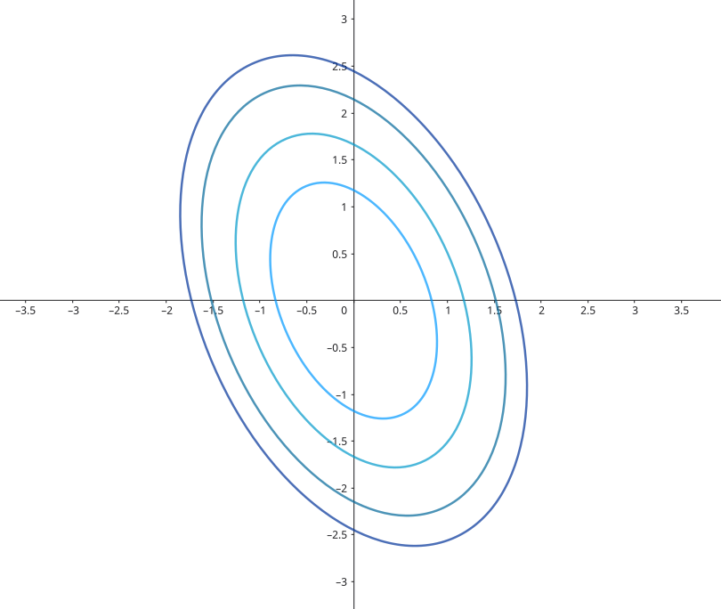
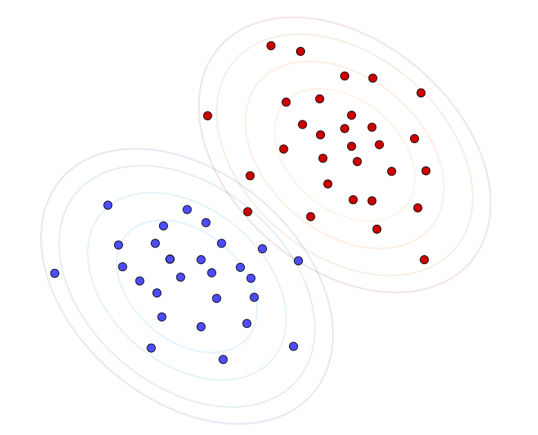
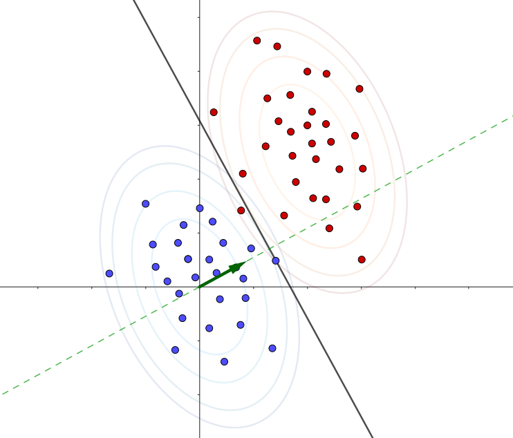
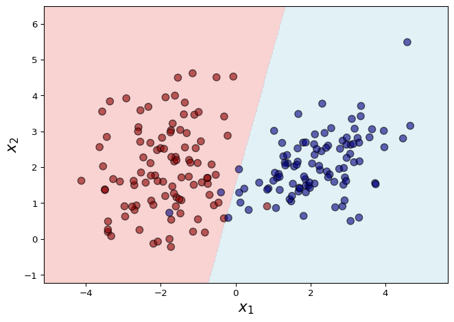
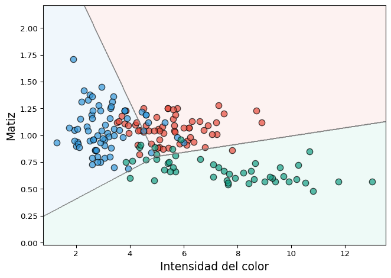
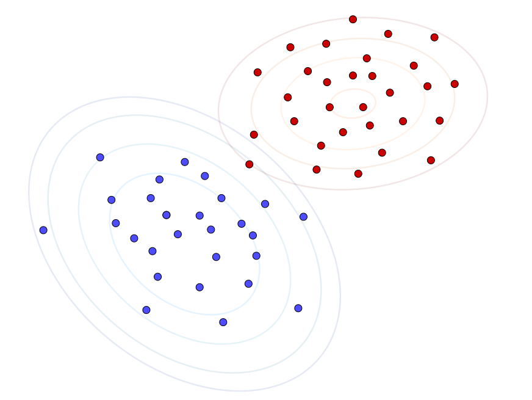
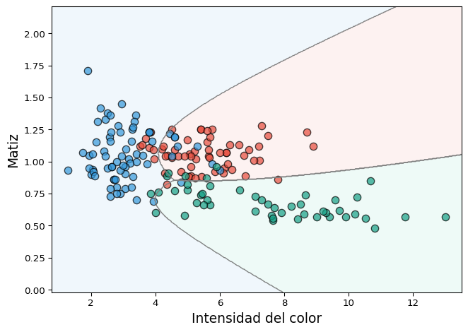

viewof mu1 = Inputs.range([-2, 2], {
step: 0.1,
label: "μ₁:",
value: 0
})
viewof mu2 = Inputs.range([-2, 2], {
step: 0.1,
label: "μ₂:",
value: 0
})
// Matriz Σ
viewof sigma11 = Inputs.range([0.1, 2], {step: 0.1, label: "σ₁₁:", value: 1})
viewof sigma12 = Inputs.range([-1, 1], {step: 0.1, label: "σ₁₂=σ₂₁:", value: 0})
viewof sigma22 = Inputs.range([0.1, 2], {step: 0.1, label: "σ₂₂:", value: 1})Modelos generativos para clasificación
Capítulo 3 - Sección 1
\[ \def\NN{\mathbb{N}} \def\ZZ{\mathbb{Z}} \def\RR{\mathbb{R}} \def\media{\mathbb{E}} \def\cov{\text{Cov}} \def\prob{\mathbb{P}} \def\calL{\mathcal{L}} \def\calG{\mathcal{G}} \def\calH{\mathcal{H}} \def\calD{\mathcal{D}} \def\calN{\mathcal{N}} \def\aa{{\bf a}} \def\bb{{\bf b}} \def\cc{{\bf c}} \def\dd{{\bf d}} \def\hh{{\bf h}} \def\qq{{\bf q}} \def\xx{{\bf x}} \def\yy{{\bf y}} \def\zz{{\bf z}} \def\uu{{\bf u}} \def\vv{{\bf v}} \def\ww{{\bf w}} \def\XX{{\bf X}} \def\TT{{\bf T}} \def\SS{{\bf S}} \def\bfZ{{\bf Z}} \def\bfg{{\bf g}} \def\bftheta{\boldsymbol{\theta}} \def\bfphi{\boldsymbol{\phi}} \def\bfmu{\boldsymbol{\mu}} \def\bfxi{\boldsymbol{\xi}} \def\bflambda{\boldsymbol{\lambda}} \def\bfgamma{\boldsymbol{\gamma}} \def\bfbeta{\boldsymbol{\beta}} \def\bfalpha{\boldsymbol{\alpha}} \def\bfeta{\boldsymbol{\eta}} \def\bfmu{\boldsymbol{\mu}} \def\bfnu{\boldsymbol{\nu}} \def\bfTheta{\boldsymbol{\Theta}} \def\bfSigma{\boldsymbol{\Sigma}} \def\bfone{\mathbf{1}} \def\bfzero{\mathbf{0}} \def\argmin{\mathop{\mathrm{arg\,min\,}}} \def\argmax{\mathop{\mathrm{arg\,max\,}}} \]
En el capítulo anerior hemos trabajado con métodos que modelan la distribución condicional \(p(y\mid \xx; \bftheta)\). Como caso general, los modelos lineales generalizados asumen dicha distribución en una familia exponencial con parámetro natural \(\bfeta=\bfTheta^\top\xx\).
En este capítulo adoptaremos un enfoque diferente. Dado un problema de clasificación \(Y|\XX\), el propósito será modelar la distribución conjunta \[ p(\xx,y):=p(\xx\mid y)\, p(y), \] donde \(p(\xx\mid y)\) es la distribución condicional de las variables predictoras para la clase \(Y=y\), y \(p(y)\) es la distribución de probabilidad a priori de dicha clase. Esto conduce a modelos generativos que describen el proceso de generación de los datos. No obstante, para fines de clasificación, lo que nos interesa es determinar la clase más probable dada una observación. En este contexto, la * Bayes* nos indica que \[ p(y\mid\xx)=\frac{p(\xx\mid y)\,p(y)}{p(\xx)}. \]
Observar que, al momento de clasificar una observación \(\xx\), es suficiente comparar los numeradores \(p(\xx\mid y)\,p(y)\) para cada clase, puesto que \(p(\xx)\) actúa como una constante de normalización que no depende de \(y\). De esta forma, la regla de decisión bayesiana es \[ h*(\xx):=\arg\max_{y} p(\xx\mid y)\,p(y). \]
En esta sección estudiaremos tres ejemplos representativos de modelos generativos utilizados en clasificación: los modelos discriminativos gaussianos (LDA y QDA) y Naive Bayes.
En lo que sigue, vamos a asumir que estamos trabajando con un conjunto de datos de entrenamiento \(\{(\xx_i,y_i)\}_{i=1}^n\) de un problema de clasificación binaria cuya variable respuesta es \(Y\in\{0,1\}\). Por supuesto, los modelos presentados se extienden de forma natural a problemas multiclase.
Además, es importante remarcar que \(p(\xx\mid y)\) implica trabajar con distribuciones multivariadas de \(\XX\in\RR^p\). En particular, la distribución Normal multivariada será la base para los modelos discriminativos gaussianos que estudiaremos en esta sección.
La Normal multivariada
Definición 1. (Distribución Normal multivariada) Una variable aleatoria \(\XX\in\RR^p\) se distribuye normal multivariada con media \(\bfmu\in\RR^p\) y matriz de covarianza \(\Sigma\in\mathbf{S}_+^p\), y denotamos \[ \XX\sim \calN(\bfmu,\Sigma), \]
si su función de densidad está dada por
\[ p(\xx\mid\bfmu,\Sigma)=\frac{1}{(2\pi)^{p/2}|\Sigma|^{1/2}}\exp\left\{-\frac{1}{2}(\xx-\bfmu)^\top\Sigma^{-1}(\xx-\bfmu)\right\}. \]
En el siguiente gráfico interactivo, se puede visualizar la densidad de una normal bivariada con parámetros \[ \bfmu=\begin{pmatrix} \mu_1 \\ \mu_2 \end{pmatrix} \qquad \Sigma=\begin{pmatrix} \sigma_{11} & \sigma_{12} \\ \sigma_{21} & \sigma_{22} \end{pmatrix} \]
Ejemplo 1 Curvas de nivel de una normal bivariada
Sea \(\XX\in\RR^2\), \(\XX\sim\calN(\bfmu,\Sigma)\), con \[ \bfmu=\begin{pmatrix} 0\\ 0 \end{pmatrix} \qquad \Sigma=\begin{pmatrix} 1 & 0.5 \\ 0.5 & 2 \end{pmatrix}. \tag{1} \]
La función de densidad es \[ \begin{align*} p(\xx)&=\frac{1}{2\pi\sqrt{\frac{7}{4}}}\exp\left\{-\frac{1}{2}(x_1,x_2)^\top\begin{pmatrix}\frac{8}{7} & -\frac{2}{7} \\ -\frac{2}{7} & \frac{4}{7} \end{pmatrix} (x_1,x_2)\right\} \\[3pt] &=\frac{1}{\sqrt{7}\pi}\exp\left\{-\frac{1}{2}\left(\frac{8}{7}x_1^2-\frac{4}{7}x_1x_2+\frac{4}{7}x_2^2\right)\right\} \end{align*}, \]
y, por lo tanto, las curvas de nivel son elipses de ecuación \[ 2x_1^2-x_1x_2+x_2^2 = \text{cte}. \]

Veamos a continuación cómo obtener los estimadores MLE de los parámetros \(\bfmu\) y \(\Sigma\) a partir de un conjunto de datos \(\{\xx_1,\ldots,\xx_n\}\). La función de log-verosimilitud es \[ \ell(\bfmu,\Sigma)=\sum_{i=1}^n\left(-\frac{p}{2}\log(2\pi)-\frac{1}{2}\log|\Sigma|-\frac{1}{2}(\xx_i-\bfmu)^\top\Sigma^{-1}(\xx_i-\bfmu)\right) \]
En primer lugar, mantendremos \(\Sigma\) fijo, de manera tal de trabajar con el problema \[ \begin{array}{ll} \text{maximizar } & -\frac{1}{2}\displaystyle\sum_{i=1}^n(\xx_i-\bfmu)^\top\Sigma^{-1}(\xx_i -\bfmu). \end{array} \]
La condición de optimalidad resulta \[ \begin{align} \sum_{i=1}^n\Sigma^{-1}(\xx_i-\hat{\bfmu})&=0\\ \Sigma^{-1}\left(\sum_{i=1}^n\xx_i-n\hat{\bfmu}\right) &=0 \\ \hat{\bfmu} &=\frac{1}{n}\sum_{i=1}^n\xx_i. \end{align} \]
Dado que el estimador obtenido es independiente de \(\Sigma\), podemos reemplazarlo en la función de log-verosimilitud y, a partir de allí, optimizar respecto a \(\Sigma\). Esto deriva en el problema \[ \begin{array}{ll} \text{maximizar } & -\frac{n}{2}\log|\Sigma|-\frac{1}{2}\sum_{i=1}^n(\xx_i-\hat{\bfmu})^\top\Sigma^{-1}(\xx_i-\hat{\bfmu}). \end{array} \tag{2} \]
Es conveniente derivar la función objetivo en (2) respecto de \(\Sigma^{-1}\) y tener en cuenta algunos resultados importantes de análisis matricial: \[ \nabla_{A^{-1}} \log |A|=-A,\qquad\nabla_A\text{tr}(BA)=B^\top. \]
En particular, para poder usar la segunda expresión, hay que tener en cuenta que \[ (\xx-\hat{\bfmu})^\top\Sigma^{-1}(\xx-\hat{\bfmu})=\text{tr}((\xx-\hat{\bfmu})^\top\Sigma^{-1}(\xx-\hat{\bfmu}))=\text{tr}((\xx-\hat{\bfmu})(\xx-\hat{\bfmu})^\top\Sigma^{-1}). \]
Resulta: \[ \begin{align} \frac{n}{2}\hat{\Sigma}-\frac{1}{2}\sum_{i=1}^n(\xx_i-\hat{\bfmu})(\xx_i-\hat{\bfmu})^\top &= \bfzero \\ \hat{\Sigma} &= \frac{1}{n}\sum_{i=1}^n(\xx_i-\hat{\bfmu})(\xx_i-\hat{\bfmu})^\top. \end{align} \]
Análisis discriminante lineal (LDA)
En este modelo, asumiremos que \(p(\xx\mid y)\) es una distribución normal multivariada, con matriz de covarianza \(\Sigma\) constante para todas las clases.
Supuestos del modelo
\[ \begin{array}{c} Y\sim\text{Bernoulli}(\varphi) \\[2pt] \XX\mid Y=0\sim\calN(\bfmu_0,\Sigma) \\[2pt] \XX\mid Y=1\sim\calN(\bfmu_1,\Sigma) \\[2pt] \end{array} \]

Así, las distribuciones de este modelo son: \[ p(y)=\varphi^y(1-\varphi)^{1-y}, \] \[ p(\xx\mid y=0)=\frac{1}{(2\pi)^{d/2}|\Sigma|^{1/2}}\exp\left\{-\frac{1}{2}(\xx-\bfmu_0)^\top\Sigma^{-1}(\xx-\bfmu_0)\right\}, \] \[ p(\xx\mid y=1)=\frac{1}{(2\pi)^{d/2}|\Sigma|^{1/2}}\exp\left\{-\frac{1}{2}(\xx-\bfmu_1)^\top\Sigma^{-1}(\xx-\bfmu_1)\right\}. \]
Importante
La suposición \(Y\sim\text{Bernoulli}(\varphi)\) implica \(p(y=1)=\varphi\). Ahora bien, ¿qué podemos decir sobre \(p(y=1\mid\xx)\)? Por regla de Bayes, resulta \[ \begin{align*} \frac{p(y=1\mid \xx)}{p(y=0\mid\xx)}&=\frac{p(\xx\mid y=1)\,p(y=1)}{p(\xx\mid y=0)\,p(y=0)} \\[3pt] &=\frac{\varphi}{1-\varphi}\exp\left\{-\frac{1}{2}(\xx-\bfmu_1)^\top\Sigma^{-1}(\xx-\bfmu_1)+\frac{1}{2}(\xx-\bfmu_0)^\top\Sigma^{-1}(\xx-\bfmu_0)\right\} \\[3pt] &=\frac{\varphi}{1-\varphi}\exp\left\{\xx^\top\Sigma^{-1}(\bfmu_1-\bfmu_0)-\frac{1}{2}(\bfmu_1^\top\Sigma^{-1}\bfmu_1-\bfmu_0^\top\Sigma^{-1}\bfmu_0)\right\}. \end{align*} \]
Denotando \[ \theta_0=\log\left(\frac{\varphi}{1-\varphi}\right)-\frac{1}{2}(\bfmu_1^\top\Sigma^{-1}\bfmu_1-\bfmu_0^\top\Sigma^{-1}\bfmu_0), \] \[ \bftheta=\Sigma^{-1}(\bfmu_1-\bfmu_0), \] podemos escribir \[ \begin{align*} \frac{p(y=1\mid\xx)}{p(y=0\mid \xx)}&=\exp\{\bftheta^\top\xx+\theta_0\}\\ p(y=1\mid\xx)&=\frac{e^{\bftheta^\top\xx+\theta_0}}{1+e^{\bftheta^\top\xx+\theta_0}}. \end{align*} \]
En consecuencia, bajo el modelo LDA, la distribución condicional \(p(y\mid\xx)\) sigue necesariamente una función logística. Sin embargo, lo contrario no es cierto: asumir \(p(y\mid\xx)\) logística no implica que \(p(\xx\mid y)\) es gaussiana.
Esto muestra que LDA hace suposiciones más fuertes que la regresión logística. Si estas suposiciones son correctas, LDA será un mejor modelo.
Por otro lado, al hacer suposiciones más débiles, la regresión logística es menos sensible a suposiciones de modelado incorrectas. De hecho, existen otros casos de suposiciones sobre la distribución de \(\XX\mid Y\) que conducen a que \(p(y\mid \xx)\) sea una función logística. Allí, puede esperarse que la regresión logística funcione mejor que LDA.
Regla de decisión
Como hemos visto al comienzo de esta sección, la regla de Bayes es el vínculo entre el modelo generativo y la regla de decisión utilizada para clasificar nuevas observaciones, de manera que se asigna \(\xx\) a la clase que maximiza \[ p(y\mid\xx)\propto p(\xx\mid y)\,p(y). \]
Otro punto de vista es el cociente de verosimilitudes, que determina el criterio de decisión de la siguiente manera: \[ G(\xx)=1\quad\text{si}\quad \log\frac{p(y=1\mid \xx)}{p(y=0\mid \xx)}>0. \tag{3} \]
Claramente, la frontera de decisión está determinada por \[ \begin{align*} \log p(y=1\mid \xx) &= \log p(y=0\mid \xx) \\[3pt] -\frac{1}{2}(\xx-\bfmu_1)^\top\Sigma^{-1}(\xx-\bfmu_1) + \log p(y=1) &= -\frac{1}{2}(\xx-\bfmu_0)^\top\Sigma^{-1}(\xx-\bfmu_0) + \log p(y=0) \\[3pt] (\xx-\bfmu_0)^\top \Sigma^{-1}(\xx-\bfmu_0)-(\xx-\bfmu_1)^\top \Sigma^{-1}(\xx-\bfmu_1) &= 2\log\frac{p(y=0)}{p(y=1)} \\[3pt] \underbrace{(\bfmu_1-\bfmu_0)^\top\Sigma^{-1}}_{\bfbeta^\top}\xx &=\underbrace{\log\frac{p(y=0)}{p(y=1)}+\frac{1}{2}\left(\bfmu_1^\top\Sigma^{-1}\bfmu_1-\bfmu_0^\top\Sigma^{-1}\bfmu_0\right)}_{-\beta_0} \end{align*} \]
Esto es un hiperplano de la forma \(f(\xx)=\bfbeta^\top\xx+\beta_0=0\), con vector normal \[ \bfbeta=\Sigma^{-1}(\bfmu_1-\bfmu_0). \]

Para concluir, haremos énfasis en la regla de clasificación para un problema multiclase:
\[ \begin{align*} G(x) &= \arg\max_{y} p(y\mid \xx) \\ &=\arg\max_{y} p(\xx\mid y)\,p(y) \\ & = \arg\max_{y} \left[\log p(\xx\mid y)+\log p(y)\right] \end{align*} \]
Además, denotamos \(\pi_y:=\mathbb{P}\{Y=y\}\) las probabilidades a priori de cada clase. De esta manera, y tras eliminar los términos constantes que no dependen de \(\xx\), se obtiene el siguiente resultado.
Para un problema de clasificación multiclase, la regla de decisión del modelo LDA es \[ G(\xx)=\arg\max_{y}\left[-\frac{1}{2}(\xx-\bfmu_y)^\top\Sigma^{-1}(\xx-\bfmu_y)+\log\pi_y\right]. \]
Estimación por máxima verosimilitud
Los parámetros del modelo son \(\varphi\in\RR\), \(\bfmu_0,\bfmu_1\in\RR^p\) y \(\Sigma\in\mathbf{S}_{++}^p\). La estimación por máxima verosimilitud resulta de maximizar \[ \begin{align} \ell(\varphi,\bfmu_0,\bfmu_1,\Sigma)&=\sum_{i=1}^n\log p(\xx_i,y_i\mid\varphi,\bfmu_0,\bfmu_1,\Sigma) \\ & = \sum_{i=1}^n\log\left[p(\xx_i\mid y_i;\bfmu_{y_i},\Sigma)\,p(y_i\mid\varphi)\right]\\ & = \sum_{i=1}^n\log p(\xx_i\mid y_i;\bfmu_{y_i},\Sigma) + \sum_{i=1}^n\log p(y_i\mid\varphi). \end{align} \tag{4} \]
Obtengamos en primer lugar el MLE de \(\varphi\). Este es el punto óptimo de \[ \begin{array}{ll} \text{maximizar } & \displaystyle\sum_{i=1}^n\log p(y_i\mid\varphi), \end{array} \]
cuya función objetivo es la función de verosimilitud de \(Y\sim\text{Bernoulli}(\varphi)\). Es fácil ver que \[ \hat{\varphi}=\frac{1}{n}\sum_{i=1}^n y_i=\frac{1}{n}\sum_{i=1}^n\bfone\{y_i=1\}. \]
Ahora bien, si fijamos \(\Sigma\) en (4), el problema de optimización para hallar \(\bfmu_y\), para \(y\in\{0,1\}\), es
\[ \begin{array}{ll} \text{maximizar } & -\displaystyle\frac{1}{2}\sum_{i:y_i=y}^n(\xx_i-\bfmu_y)^\top\Sigma^{-1}(\xx_i-\bfmu_y) \end{array} \tag{5} \]
La función objetivo en (5) es claramente cóncava, ya que \(\Sigma\succ 0\) implica \(\Sigma^{-1}\succ 0\). Por lo tanto, al igualar el gradiente a cero obtenemos \[ \begin{align} \sum_{i:y_i=y}^n\Sigma^{-1}(\xx_i-\hat{\bfmu}_y)&=0 \\ \sum_{i:y_i=y}^n(\xx_i-\hat{\bfmu}_y)&=0 \\ \hat{\bfmu}_y &= \frac{\sum_{i=1}^n\bfone\{y_i=y\}\xx_i}{\sum_{i=1}^n\bfone\{y_i=y\}}, \tag{6} \end{align} \]
lo cual es la media muestral de la clase \(Y=y\), es decir, del conjunto \(\{\xx_i\mid y_i=y\}\). Observar que (6) no depende de \(\Sigma\), lo cual valida este resultado para nuestro objetivo de maximizar la verosimilitud.
Por último, reemplazaremos (6) en (4) para construir el siguiente problema de optimización:
\[ \begin{array}{ll} \text{maximizar } & -\displaystyle\frac{1}{2}\sum_{i=1}^n(\xx_i-\hat{\bfmu}_{y_i})^\top\Sigma^{-1}(\xx_i+\hat{\bfmu}_{y_i})-\frac{n}{2}\log |\Sigma|. \end{array} \tag{7} \]
Vamos a reformular (7), utilizando que:
\(\log|\Sigma^{-1}|=\log(1/|\Sigma|)=-\log|\Sigma|\).
\(\begin{align*}\sum_{i=1}^n(\xx_i-\hat{\bfmu}_{y_i})^\top\Sigma^{-1}(\xx_i+\hat{\bfmu}_{y_i})&=\sum_{i=1}^n\text{tr}[(\xx_i-\hat{\bfmu}_{y_i})^\top\Sigma^{-1}(\xx_i+\hat{\bfmu}_{y_i})]\\&=\sum_{i=1}^n\text{tr}[\Sigma^{-1}(\xx_i-\hat{\bfmu}_{y_i})(\xx_i+\hat{\bfmu}_{y_i})^\top]\\&=\text{tr}\left[\Sigma^{-1}\sum_{i=1}^n(\xx_i-\hat{\bfmu}_{y_i})(\xx_i+\hat{\bfmu}_{y_i})^\top\right]\end{align*}\)
Resulta \[ \begin{array}{ll} \text{maximizar } & \displaystyle\frac{n}{2}\log|\Sigma^{-1}|-\frac{1}{2}\text{tr}\left[\Sigma^{-1}\sum_{i=1}^n(\xx_i-\hat{\bfmu}_{y_i})(\xx_i+\hat{\bfmu}_{y_i})^\top\right] \end{array} \tag{8} \]
Si consideramos como variable de optimización a \(\Sigma^{-1}\), la función objetivo en (8) es estrictamente cóncava. Luego, al igualar el gradiente a cero obtenemos \[ \begin{align*} \frac{n}{2}\hat{\Sigma}-\frac{1}{2}\sum_{i=1}^n(\xx_i-\hat{\bfmu}_{y_i})(\xx_i+\hat{\bfmu}_{y_i})^\top&=0 \\ \hat{\Sigma}&=\frac{1}{n}\sum_{i=1}^n(\xx_i-\hat{\bfmu}_{y_i})(\xx_i+\hat{\bfmu}_{y_i})^\top. \end{align*} \]
En resumen:
Los MLE de los parámetros del modelo LDA son \[ \hat{\varphi}=\frac{1}{n}\sum_{i=1}^n\bfone\{y_i=1\}, \] \[ \hat{\bfmu}_y = \frac{\sum_{i=1}^n\bfone\{y_i=y\}\xx_i}{\sum_{i=1}^n\bfone\{y_i=y\}}, \] \[ \hat{\Sigma} =\frac{1}{n}\sum_{i=1}^n(\xx_i-\hat{\bfmu}_{y_i})(\xx_i+\hat{\bfmu}_{y_i})^\top. \]
Ejemplo 2 LDA en datos simulados de clasificación binaria
Simulamos un conjunto de datos en \(\RR^2\) perteneciente a dos clases. Al aplicar LDA, el modelo estima una frontera lineal de decisión que separa ambas regiones.
Mostrar código
import numpy as np
import matplotlib.pyplot as plt
from matplotlib.colors import ListedColormap
from sklearn.discriminant_analysis import LinearDiscriminantAnalysis as LDA
from sklearn.datasets import make_classification
# Datos:
X, y = make_classification(
n_samples=200, n_features=2, n_redundant=0, n_informative=2,
n_clusters_per_class=1, class_sep=2.0, random_state=42
)
# Modelo LDA:
lda = LDA()
lda.fit(X, y)
# 📈:
x_min, x_max = X[:, 0].min() - 1, X[:, 0].max() + 1
y_min, y_max = X[:, 1].min() - 1, X[:, 1].max() + 1
xx, yy = np.meshgrid(np.linspace(x_min, x_max, 300),
np.linspace(y_min, y_max, 300))
Z = lda.predict(np.c_[xx.ravel(), yy.ravel()]).reshape(xx.shape)
# Colores:
bg_colors = ['lightcoral', 'lightblue'] # regiones
pt_colors = ['darkred', 'navy'] # puntos (clases)
cmap_bg = ListedColormap(bg_colors)
cmap_pts = ListedColormap(pt_colors)
plt.figure(figsize=(7,5))
plt.contourf(xx, yy, Z, levels=[-0.5, 0.5, 1.5], colors=bg_colors, alpha=0.35)
plt.scatter(X[:,0], X[:,1], c=y, cmap=cmap_pts, edgecolor='k', s=60, alpha=0.6)
plt.xlabel("$x_1$", size=16)
plt.ylabel("$x_2$", size=16)
plt.tight_layout()
plt.show()
Ejemplo 3 LDA en datos de clasificación multiclase
En este ejemplo utilizamos el conjunto de datos wine disponible en scikit-learn, que contiene mediciones químicas de tres tipos de vino. Para visualizar el resultado de la clasificación, consideramos únicamente dos variables predictoras: la intensidad de color y el matiz.
El modelo LDA estima las fronteras lineales que separan las tres clases, utilizando la comparación de a pares.
Mostrar código
import numpy as np
import matplotlib.pyplot as plt
from matplotlib.colors import ListedColormap
from sklearn.datasets import load_wine
from sklearn.discriminant_analysis import LinearDiscriminantAnalysis as LDA
# Datos:
wine = load_wine()
X = wine.data[:, [9, 10]]
y = wine.target
target_names = wine.target_names
# Modelo LDA:
lda = LDA()
lda.fit(X, y)
# 📈:
x_min, x_max = X[:, 0].min() - 0.5, X[:, 0].max() + 0.5
y_min, y_max = X[:, 1].min() - 0.5, X[:, 1].max() + 0.5
xx, yy = np.meshgrid(np.linspace(x_min, x_max, 500),
np.linspace(y_min, y_max, 500))
Z = lda.predict(np.c_[xx.ravel(), yy.ravel()]).reshape(xx.shape)
bg_colors = ['#FDEDEC', '#EBF5FB', '#E8F8F5']
pt_colors = ['#E74C3C', '#3498DB', '#16A085']
cmap_bg = ListedColormap(bg_colors)
cmap_pts = ListedColormap(pt_colors)
plt.figure(figsize=(7,5))
plt.contourf(xx, yy, Z, alpha=0.7, cmap=cmap_bg)
plt.contour(xx, yy, Z, levels=np.arange(-0.5, 3), colors='gray', linewidths=1)
for i, name in enumerate(target_names):
plt.scatter(X[y==i,0], X[y==i,1], label=name,
c=pt_colors[i], edgecolor='k', s=60, alpha=0.7)
plt.xlabel("Intensidad del color", fontsize=14)
plt.ylabel("Matiz", fontsize=14)
plt.tight_layout()
plt.show()
Análisis discriminante cuadrático (QDA)
Vamos a extender el modelo LDA, permitiendo diferentes matrices de covarianza para cada clase. Esto proporciona mayor flexibilidad para modelar datos donde ls clases tienen diferentes formas y orientaciones.
Supuestos del modelo
\[ \begin{array}{c} Y\sim\text{Bernoulli}(\varphi) \\[2pt] \XX\mid Y=0\sim\calN(\bfmu_0,\Sigma_0) \\[2pt] \XX\mid Y=1\sim\calN(\bfmu_1,\Sigma_1) \\[2pt] \end{array} \]

Las distribuciones son: \[ p(y)=\varphi^y(1-\varphi)^{1-y}, \] \[ p(\xx\mid y=0)=\frac{1}{(2\pi)^{d/2}|\Sigma_0|^{1/2}}\exp\left\{-\frac{1}{2}(\xx-\bfmu_0)^\top\Sigma_0^{-1}(\xx-\bfmu_0)\right\}, \] \[ p(\xx\mid y=1)=\frac{1}{(2\pi)^{d/2}|\Sigma_1|^{1/2}}\exp\left\{-\frac{1}{2}(\xx-\bfmu_1)^\top\Sigma_1^{-1}(\xx-\bfmu_1)\right\}. \]
Regla de decisión
El no suponer la misma matriz de covarianza para todas las clases tiene las siguientes consecuencias a la hora de determinar la regla de decisión:
El término \(-\log |\Sigma_y|\) no puede ser descartado, pues es diferente para cada clase.
Los términos cuadráticos \(\xx^\top\Sigma_y^{-1}\xx\) no se cancelan y, por lo tanto, la frontera de decisión es cuadrática con término cuadrático \(\xx^\top(\Sigma_1-\Sigma_0)^{-1}\xx\).
Para un problema de clasificación multiclase, la regla de decisión del modelo QDA es \[ G(\xx)=\arg\max_{y}\left[-\frac{1}{2}\log |\Sigma_y|-\frac{1}{2}(\xx-\bfmu_y)^\top\Sigma_y^{-1}(\xx-\bfmu_y)+\log\pi_y\right]. \]
Estimación por máxima verosimilitud
De manera similar al caso de LDA, se obtienen los estimadores por máxima verosimilitud para los parámetros \(\varphi\in\RR\), \(\bfmu_0, \bfmu_1\in\RR^p\) y \(\Sigma_0, \Sigma_1\in\mathbf{S}_{++}^p\).
Los MLE de los parámetros del modelo QDA son \[ \hat{\varphi}=\frac{1}{n}\sum_{i=1}^n\bfone\{y_i=1\}, \] \[ \hat{\bfmu}_y = \frac{\sum_{i=1}^n\bfone\{y_i=y\}\xx_i}{\sum_{i=1}^n\bfone\{y_i=y\}}, \] \[\hat{\Sigma}_y = \frac{\sum_{i=1}^{n} \mathbf{1}\{ y_i = y \} (\mathbf{x}_i - \hat{\boldsymbol{\mu}}_{y}) (\mathbf{x}_i - \hat{\boldsymbol{\mu}}_{y})^{\top}} {\sum_{i=1}^{n} \mathbf{1}\{ y_i = y \}}. \]
Ejemplo 4 QDA en datos de clasificación multiclase
En este ejemplo utilizamos los mismos datos del Ejemplo 3, pero aplicamos el modelo QDA. A diferencia del LDA, este modelo permite que cada clase tenga su propia matriz de covarianza, lo que da lugar a fronteras de decisión no lineales que se adaptan mejor a la estructura de los datos.
Mostrar código
import numpy as np
import matplotlib.pyplot as plt
from matplotlib.colors import ListedColormap
from sklearn.datasets import load_wine
from sklearn.discriminant_analysis import QuadraticDiscriminantAnalysis as QDA
# Datos:
wine = load_wine()
X = wine.data[:, [9, 10]] # Intensidad de color y matiz
y = wine.target
target_names = wine.target_names
# Modelo QDA:
qda = QDA()
qda.fit(X, y)
# 📈:
x_min, x_max = X[:, 0].min() - 0.5, X[:, 0].max() + 0.5
y_min, y_max = X[:, 1].min() - 0.5, X[:, 1].max() + 0.5
xx, yy = np.meshgrid(np.linspace(x_min, x_max, 500),
np.linspace(y_min, y_max, 500))
Z = qda.predict(np.c_[xx.ravel(), yy.ravel()]).reshape(xx.shape)
bg_colors = ['#FDEDEC', '#EBF5FB', '#E8F8F5']
pt_colors = ['#E74C3C', '#3498DB', '#16A085']
cmap_bg = ListedColormap(bg_colors)
cmap_pts = ListedColormap(pt_colors)
plt.figure(figsize=(7,5))
plt.contourf(xx, yy, Z, alpha=0.7, cmap=cmap_bg)
plt.contour(xx, yy, Z, levels=np.arange(-0.5, 3), colors='gray', linewidths=1)
for i, name in enumerate(target_names):
plt.scatter(X[y==i,0], X[y==i,1], label=name,
c=pt_colors[i], edgecolor='k', s=60, alpha=0.7)
plt.xlabel("Intensidad del color", fontsize=14)
plt.ylabel("Matiz", fontsize=14)
plt.tight_layout()
plt.show()
Naive Bayes
Los métodos de Naive Bayes son un conjunto de algoritmos basados en la aplicación del teorema de Bayes, con la suposición ingenua de independencia condicional entre las características dado el valor de la clase.
Supuesto del modelo
\[ p(x_i\mid y,x_1,\ldots,x_{i-1},x_{i+1},\ldots,x_p)=p(x_i\mid y) \] \[ \forall i=1,\ldots p. \]
Como consecuencia, resulta \[ p(\xx\mid y)=\prod_{i=1}^p p(x_i\mid y). \]
Esto permite utilizar diferentes distribuciones univariadas para modelar \(p(x_i\mid y)\). Por lo tanto, no existe un solo tipo de clasificador Naive Bayes. Los tipos más comunes son:
NB Gaussiano: útil para trabajar con variables continuas \(X_i\); se asume \(p(x_i|y)\sim\calN(\mu_{iy},\sigma_{iy}^2)\).
NB Bernoulli: útil para trabajar con variables discretas booleanas (que asumen dos variables, 0 y 1); se asume \(p(x_i\mid y)\sim\text{Bernoulli}(p_{iy})\).
El uso de Naive Bayes para variables discretas es particularmente útil cuando los predictores representan conteos, como en clasificación de textos, donde cada \(X_i\) indica la presencia de una palabra en un documento o la cantidad de veces que aparece. A continuación, veremos más en detalle esta aplicación.
Clasificación de texto
Sea \(\XX\in\RR^p\) una variable cuya dimensión coincide con el número de palabras disponibles, a cuyo conjunto nos referiremos como vocabulario, de manera tal que \(X_i\) indica la presencia o ausencia de la \(i\)-ésima palabra en un documento dado. Por ejemplo, la observación \[ \xx=\begin{pmatrix} 1\\ 0\\ 0\\ \vdots\\ 1\\ \vdots \\ 0\end{pmatrix} \qquad \begin{matrix} \text{casa}\\ \text{bicicleta}\\ \text{zapato}\\ \vdots\\ \text{comprar}\\ \vdots \\ \text{perro}\end{matrix} \]
representa un documento que contiene las palabras “casa” y “comprar”, pero no “bicicleta”, “zapato” y “perro”. Ahora bien, si suponemos que el vocabulario está compuesto por 50000 palabras, modelar cada observación \(\xx\) por separado para obtener la distribución conjunta da lugar a \(2^{50000}-1\) parámetros. Por tal motivo, el uso de Naive Bayes simplifica mucho el problema; el precio a pagar es la suposición ingenua de independencia: se asume que saber si la \(i\)-ésima palabra aparece o no en un documento no aporta información sobre la presencia o ausencia de la \(j\)-ésima palabra.
Supuesto del modelo
\[ Y\sim\text{Bernoulli}(\varphi) \] \[ X_j\mid Y=0\sim\text{Bernoulli}(\phi_{j\mid y=0}) \] \[ X_j\mid Y=1\sim\text{Bernoulli}(\phi_{j\mid y=1}) \] \[ p(\xx_i\mid y_i)=\prod_{j=1}^p p(x_{ij}\mid y_i)\qquad \forall i=1,\ldots, n \]
Los parámetros del modelo son \[ \phi_{j\mid y=0}:=p(x_j=1\mid y=0), \] \[ \phi_{j\mid y=1}:=p(x_j=1\mid y=1), \] \[ \phi_y:=p(y=1). \]
Regla de decisión
Para un problema de clasificación multiclase, la regla de decisión del modelo Naive Bayes con características Bernoulli es \[ G(\xx)=\arg\max_{y} \left(\varphi^{y}(1-\varphi)^{1-y}\prod_{j=1}^p\phi_{j\mid y}^{x_{j}}(1-\phi_{j\mid y})^{1-x_{j}}\right). \]
Estimación por máxima verosimilitud
La función de verosimilitud es \[ \begin{align} L(\varphi,\phi_{i\mid y=0},\phi_{i\mid y=1})&=\prod_{i=1}^n p(\xx_i\mid y_i; \phi_{i\mid y=0}, \phi_{i\mid y=1})\,p(y_i\mid\varphi) \\ &=\prod_{i=1}^n\left(\prod_{j=1}^p\phi_{j\mid y=y_i}^{x_{ij}}(1-\phi_{j\mid y=y_i})^{1-x_{ij}}\right)\underbrace{p(y_i\mid\varphi)}_{\varphi^{y_i}(1-\varphi)^{1-y_i}}. \end{align} \]
La log-verosimilitud es \[ \ell(\phi_y,\phi_{i\mid y=0},\phi_{i\mid y=1})=\sum_{i=1}^n\sum_{j=1}^p\left(x_{ij}\log\phi_{i\mid y=y_i}+(1-x_{ij})\log(1-\phi_{i\mid y=y_i})\right)+\sum_{i=1}^n\log p(y\mid\varphi). \]
Dado que estamos trabajando con distribuciones Bernoulli, la maximización de la verosimilitud es sencilla y queda como ejercicio.
Los MLE de los parámetros del modelo Naive Bayes con características Bernoulli son \[ \hat{\varphi}=\frac{1}{n}\sum_{i=1}^n\bfone\{y_i=1\}, \] \[ \hat{\phi}_{j\mid y=0}=\frac{\sum_{i=1}^n\bfone\{x_{ij}=1\land y_i=0\}}{\sum_{i=1}^n\bfone\{y_i=0\}} \] \[ \hat{\phi}_{j\mid y=1}=\frac{\sum_{i=1}^n\bfone\{x_{ij}=1\land y_i=1\}}{\sum_{i=1}^n\bfone\{y_i=1\}} \]
Con esto hemos desarrollado el método de Naive Bayes para el caso de características binarias \(X_i\). La generalización al caso de variables discretas que toman valores en \(\{1,2,\ldots,k\}\) es directa, mediante el uso de la distribución categórica, aplicable a otros tipos de problemas donde cada variable puede asumir más de dos categorías (clasificación de encuestas, diagnóstico médico, entre otros).
En el caso particular de clasificación de textos, es común modelar las variables como conteos de palabras en lugar de variables binarias de presencia/auscencia. En ese contexto, se utiliza el Naive Bayes Multinomial, que asume independencia entre apariciones de palabras, lo cual permite modelar \(p(\xx\mid y)\) mediante la distribución Multinomial.
Importante
El método de Naive Bayes funciona bien en muchos problemas, pero en clasificación de textos puede presentar un problema: si aparece una palabra en un documento que nunca se vio en el conjunto de entrenamiento, los estimadores asociados se anulan y, en consecuencia, la probabilidad a posteriori \(p(y\mid\xx)\) queda indeterminada. En efecto, en la expresión \[ p(y=1\mid \xx)=\frac{\prod_{j=1}^p p(x_j\mid y=1)\,p(y=1)}{\prod_{j=1}^p p(x_j\mid y=0)\,p(y=0)+\prod_{j=1}^p p(x_j\mid y=1)\,p(y=1)} \] cada uno de los términos \(\prod_{j=1}^pp(x_j\mid y)\) se anula.
Para evitar esto, una herramienta es el suavizado de Laplace, que consiste en sumar al numerador un 1 y al denominador \(k\) (aquí, \(k\) es el número de clases) en los estimadores. Esto es, para el caso Bernoulli resulta \[ \hat{\phi}_{j\mid y=0}=\frac{\sum_{i=1}^n\bfone\{x_{ij}=1\land y_i=0\}+1}{\sum_{i=1}^n\bfone\{y_i=0\}+2} \] \[ \hat{\phi}_{j\mid y=1}=\frac{\sum_{i=1}^n\bfone\{x_{ij}=1\land y_i=1\}+1}{\sum_{i=1}^n\bfone\{y_i=1\}+2} \]
Este procedimiento es un caso particular de la estimación de máxima a posteriori (MAP). Este principio utiliza información a priori a la hora de estimar, definiendo una distribución previa sobre los parámetros del modelo. La diferencia con MLE se ve directamente en sus formulaciones: \[ \hat{\bftheta}_{\text{MLE}}=\arg\max_{\bftheta}p(\xx\mid\bftheta), \] \[ \hat{\bftheta}_{\text{MAP}}=\arg\max_{\bftheta}p(\xx\mid\bftheta)\,p(\bftheta). \]
En el caso Bernoulli, se suele asumir una distribución Beta como prior, a saber, \[ \phi_{j}\sim\text{Beta}(\alpha,\beta). \]
En particular, \(\text{Beta}(1,1)\) conduce al suavizado de Laplace. Dado que \(\text{Beta}(1,1)=\text{Uniforme}([0,1])\), esto equivale a no introducir sesgo a priori sobre los parámetros \(\phi_j\), de manera que cada valor entre \(0\) y \(1\) es igualmente probable antes de observar los datos.
Actividades
✏️ ConceptualesMostrar
Construya un clasificador para \(Y \in \{0,1\}\) dado \(X \in [0,6)\) utilizando el Teorema de Bayes. Las funciones de densidad condicional para cada clase son las siguientes: \[ P(X=x \mid Y=0) = \begin{cases} \dfrac{1}{6}, & 0 \le x < 6,\\[6pt] 0, & \text{en otro caso.} \end{cases} \] \[ P(X=x \mid Y=1) = \begin{cases} \dfrac{x-1}{4}, & 1 \le x < 3,\\[6pt] \dfrac{5-x}{4}, & 3 \le x < 5,\\[6pt] 0, & \text{en otro caso.} \end{cases} \]
Suponiendo probabilidades a priori iguales, \(P(Y=0)=P(Y=1)=0.5\), clasificar una observación con \(x=2.5\).
Suponiendo probabilidades a priori desiguales, \(P(Y=0)=0.7\) y \(P(Y=1)=0.3\), clasificar una observación con \(x=4\).
Considere el modelo QDA.
- Demuestre que los MLE de los parámetros son: \[ \widehat{\varphi} = \frac{1}{n} \sum_{i=1}^{n} \mathbf{1}\{ y_i = 1 \}, \] \[ \widehat{\boldsymbol{\mu}}_y = \frac{\sum_{i=1}^{n} \mathbf{1}\{ y_i = y \} \mathbf{x}_i} {\sum_{i=1}^{n} \mathbf{1}\{ y_i = y \}}, \] \[ \widehat{\boldsymbol{\Sigma}}_y = \frac{\sum_{i=1}^{n} \mathbf{1}\{ y_i = y \} (\mathbf{x}_i - \widehat{\boldsymbol{\mu}}_{y}) (\mathbf{x}_i - \widehat{\boldsymbol{\mu}}_{y})^{\top}} {\sum_{i=1}^{n} \mathbf{1}\{ y_i = y \}}. \]
Ayuda: sean \(\mathbf{x} \in \mathbb{R}^{n}\), \(\mathbf{A} \in \mathbb{R}^{n \times n}\) simétrica y \(\mathbf{X}, \mathbf{B} \in \mathbb{R}^{n \times n}\), se cumple:
- \(\frac{\partial (\mathbf{x}^\top\mathbf{A}\mathbf{x})}{\partial \mathbf{x}} = 2\mathbf{A}\mathbf{x}\).
- \(\frac{\partial \ \text{tr}(\mathbf{X}^{-1}\mathbf{B})}{\partial \mathbf{X}} = -\mathbf{X}^{-1}\mathbf{B}\mathbf{X}^{-1}\).
- \(\frac{\partial \ \ln|\mathbf{X}|}{\partial \mathbf{X}} = \mathbf{X}^{-1}\).
Construya el clasificador de Bayes usando los estimadores obtenidos.
Encuentre la frontera de decisión e indique las diferencias con la hallada para el modelo LDA.
En un estudio médico, 100 pacientes fueron clasificados en una de tres clases: Neumonía, Gripe o Sano. La siguiente base de datos indica cuántos pacientes en cada clase presentaron fiebre y dolor de cabeza.
Neumonía:
Fiebre Dolor de cabeza Frecuencia T T 5 T F 0 F T 4 F F 1 — Total: 10 Gripe:
Fiebre Dolor de cabeza Frecuencia T T 9 T F 6 F T 3 F F 2 — Total: 20 Sano:
Fiebre Dolor de cabeza Frecuencia T T 2 T F 3 F T 7 F F 58 — Total: 70 Considere un paciente con fiebre pero sin dolor de cabeza.
¿Qué valores asignaría un clasificador Bayesiano óptimo a los tres diagnósticos? (un clasificador Bayesiano óptimo no realiza ninguna suposición de independencia sobre las variables). Sus respuestas no necesitan sumar 1 — explique por qué.
¿Qué probabilidad asignaría un clasificador Bayesiano óptimo a la proposición de que un paciente es sano? Muestre su procedimiento (los tres valores deben sumar 1).
¿Qué valores asignaría un clasificador naive Bayes a los tres posibles diagnósticos? Muestre su procedimiento.
¿Qué probabilidad asignaría un clasificador naive Bayes a la proposición de que un paciente es sano? Muestre su procedimiento.
Se quiere predecir si a una persona le gusta Pokémon, utilizando información sobre sus preferencias por otros programas populares. Para ello, se recolectaron datos de \(n=30\) individuos, registrando si a cada uno le gusta Star Wars y Harry Potter, además de si le gusta Pokémon. Considere \(X_1 = 1\) si le gusta Star Wars, \(X_2 = 1\) si le gusta Harry Potter e \(Y = 1\) si le gusta Pokémon (en caso negativo toman el valor 0). Los datos de entrenamiento son:
Y/X1 0 1 0 3 10 1 4 13 Y/X2 0 1 0 5 8 1 7 10 Suponga que a una nueva persona le gusta Star Wars pero no le gusta Harry Potter. ¿Le gustará Pokémon? ¿Qué tipo de clasificador de Bayes (naive u óptimo) puede construir con la información dada para responder a la pregunta?

Referencias
Ng, A. Apuntes del curso Stanford CS229: Machine Learning. Disponible aquí.